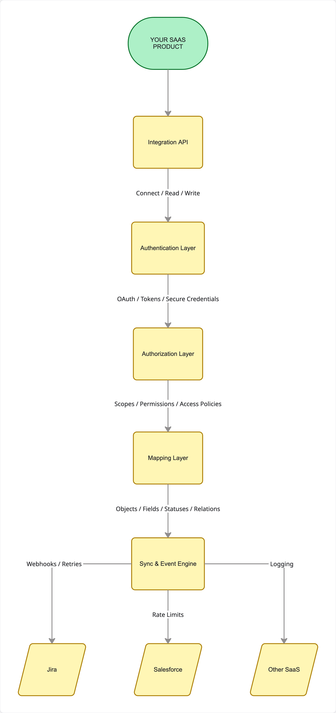

Workflows are the most underappreciated part of SaaS and now they are important to remember in an AI world
Most people that have worked with me know that I love integrations. I feel that they often go unnoticed, which is inevitable, because when they work well nobody sees them.
There's a natural tendency in SaaS to believe that the best product wins, but I don't think that's true. A single product rarely creates its full value on its own. The real value often comes from how well it connects to everything else a customer already uses (and loves), and how that makes their lives even better.
I’ve always felt (in my own biased way) that workflows and integrations are among the most underappreciated parts of building a SaaS company. They're not the most exciting features to demo and they're probably not what gets a customer through the door in the first place. Yet they can be the very thing that makes a product indispensable and stickie.
Think about Slack. To be honest, a place for people to chat isn't new. What makes it valuable is that work from all over the company flows into it. A developer gets a Jira notification, a salesperson sees a Salesforce update, the ops team gets an alert from some other system, and nobody has to keep jumping between ten different apps. Slack is worth more because of the other tools it connects to.
No SaaS product is an island
Most businesses don't run on one piece of software. They run on a whole ecosystem of tools, Salesforce for customers, Jira for engineering work, Slack for communication, GitHub for code and some finance platform for billing and reporting.
Each one might be great at its own job, but the work doesn't stop where one product ends and the next begins. When the systems aren't connected, people become the integration layer. They copy and paste, chase updates, duplicate records and manually move work from one app to another. Connect the tools properly and a lot of that pain just goes away.
I’m a big believer that the product is the interface and the workflow is the outcome. Customers don't pay for software so that they can have more software, they pay to get work done, and everyone works in a slightly different way.
Integrations are not new but maybe we’re forgetting that they’re there?
None of this started with Slack, or modern SaaS, or even APIs. Businesses have spent decades trying to get their systems to talk to each other. Back in the 1990s it even had its own name, Enterprise Application Integration (EAI). Then web services, REST APIs and the cloud came along and integration slowly became a normal part of building a product.
Salesforce, Atlassian and others have built marketplaces that are now a key pillar of their business, but I don't think the lesson is that every SaaS company needs a marketplace. The lesson is that ecosystems make it easy for products to work together, and we have to remember that when we build bespoke products. An integration can be completely invisible to the end user and still be worth more than the shiny feature everyone can see.
Building an integration is easy. Building an integration platform is harder.
This is where I see a lot of SaaS companies underestimate the problem. Building one integration is pretty straightforward. Most products have an API, some docs and a way to authenticate, so a developer can connect two systems and start reading and writing data pretty quickly.
The pain starts when you need more of them. Suddenly you're supporting different ways of authenticating, different permission models, different data structures, different API limits and different ways of handling errors… and then you've got a dependency risk upstream every time one of those APIs changes.
If you want to do this properly, I think there are at least three layers you need to get right:
- Authentication: how you securely connect to someone's account in another system. For the user it should just be a quick sign-in and a confirmation. Behind the scenes you're the one refreshing tokens, storing credentials safely and handling it when access gets revoked.
- Authorization: authentication tells you who someone is, authorization tells you what they're allowed to do. Only ask for the data you need and respect the customer's permissions, otherwise sensitive information ends up in front of the wrong people.
- Data mapping: every system structures its data differently. One app’s "task" is another app’s "issue", and custom fields are different in every single account. You need a flexible way to translate between them or you end up with a pile of one-off hacks.
What would your own integration platform look like?
If I was building an integration platform inside a SaaS product, I'd start with something simple. Here's a rough view of the main parts and how the data moves between them.

It's a simplified picture. In production you'd also need to think about monitoring, observability, keeping tenants isolated from each other, data reconciliation, API versioning and what happens when things fail.
The thing to notice is that authentication, authorization and mapping sit in the middle, between your product and the external systems. They're shared, they aren't bolted onto each connector. If every integration has its own way of managing credentials, checking permissions and translating data, then the complexity grows with every connection you add. If they're built once as platform services, each new integration gets easier and cheaper to build and run, and that's really the whole point.
Why is this all important now? - because people are building their own tools with AI
There's a trend now of building bespoke products rather than adopting established platforms. I get it, it can save costs (short term) and you can build something that really fits your needs. Teams are building their own Jira, their own CRM or their own project management system.
Aside from the long term maintenance cost, and the fact that your focus is no longer just on your own product, you'll probably have to build the unseen features that stuff like Jira is good at… its workflows. Making a ticketing system is pretty easy, but making it fully customisable and getting it to integrate with all of your other bespoke systems will be costly.
It's important to remember that there are years of ecosystem development behind those tools, and if your new bespoke product doesn't support what you need, then you'll have to get your agents to build that too.
This is where I feel the simplicity of building your own tool is misleading. The app itself might be straightforward, but the integrations around it can turn into an ongoing engineering commitment. You need to build the connectors, maintain them, handle security, and react when a third-party API changes or another new internal tool gets built. You also need to prioritise that work (or your tokens) against the features that make your product unique.
Of course, not every bespoke app needs hundreds of integrations. But if it's meant to replace a central system, like Jira, then think about the integrations from the very beginning.
Should you build your own integration platform or use one?
If you need a growing number of customer-facing integrations there is another option, use a dedicated integration provider. Products like Merge give you a unified API, so you get access to lots of third-party platforms through one consistent interface, rather than building and maintaining every connector yourself.
The saving on the first integration is nice, but the real saving is in the ongoing work of keeping lots of integrations alive as your product and your customers change. What you actually get depends on the provider and the category you're in.
My view is that it's a trade-off between control and ongoing cost. Build directly against the third-party APIs when you only have a few critical integrations, you need very specific behaviour or you want full control of the experience, but accept that your team owns every update, every API change and every failure. Use a platform when your customers expect lots of integrations and maintaining them all would distract you from your core product, but accept that you're limited to what the provider supports and you're paying their pricing.
Don't assume integrations are simple because the first prototype took a few days. Equally, don't assume you need an integration platform before you've even validated that customers want it. Build where it gives you a competitive advantage, and reuse or outsource where the work is necessary but doesn't make you different.
Integrations are a product strategy, not just an engineering task
The best integration strategies start with the workflows, not with a long list of requested connectors. Where do your customers spend their day? Where does the work come from, and where does it need to go next?
If your customers (even internal customers) spend most of their time in Slack, one really good Slack integration is probably worth more than a dozen lower-priority connectors. If your product is for engineering teams, then code repositories, CI/CD and issue trackers are probably essential.
The goal is for your product to fit naturally into what's already there. The best integrations make customers more effective, they don't make them more trapped.
The next generation of SaaS will be built around connected workflows first, not as an afterthought
All of this gets even more relevant as AI changes how software is built and used. Connecting machines to machines, rather than humans to apps, has to be the first thought and not an afterthought. Lots of companies are API first, plenty still aren't, and now they all need to be MCP first.
But having the interface is one thing. The harder questions are: does the app have access to the right data? Can it work with the systems where the work already happens? Does it respect the permissions and rules of those systems? Can it reliably do things across them?
An AI assistant that's stuck inside its own little world has very limited context. One that can securely pull information from a CRM, check an engineering ticket, look at the docs and kick off an approved workflow is far more useful. The same goes for traditional SaaS, the connected product will often beat the technically impressive but isolated one.
I don't think the future is one app that replaces everything else. I think it's lots of specialised tools connected by workflows that get smoother and smoother, and the companies that make those connections work reliably will have a real advantage.
The value is in the connections
Whether you're building your own internal tools or a customer-facing SaaS product, it’s easy to focus on the flashy parts; the UI, the new features, or getting it to work like Jira. But it's the unseen workflows and integrations that make a product fit into how people actually work.
As building software gets easier, fitting into what's already there gets more important. So the question isn't just what feature to build next, it's how you connect to the work your customers are already doing.
Please don’t forget them, and maybe the integration platform part of this blog will help you.